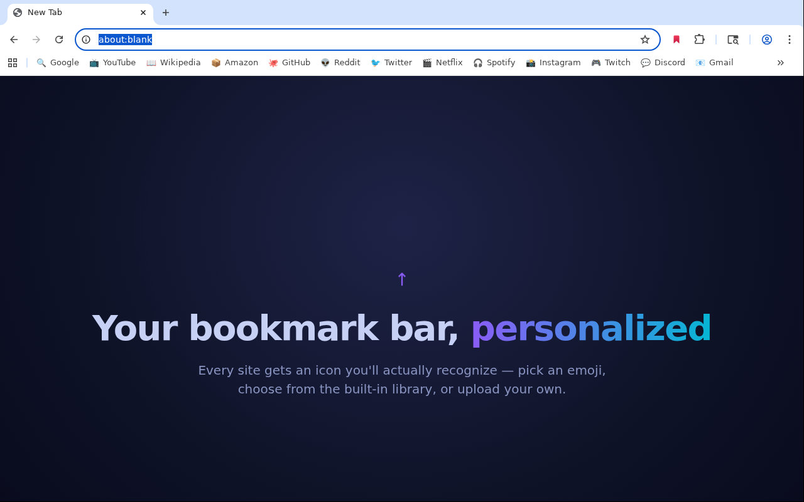
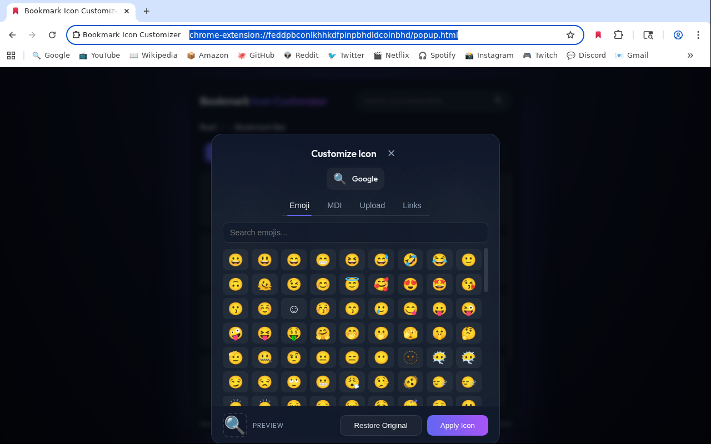
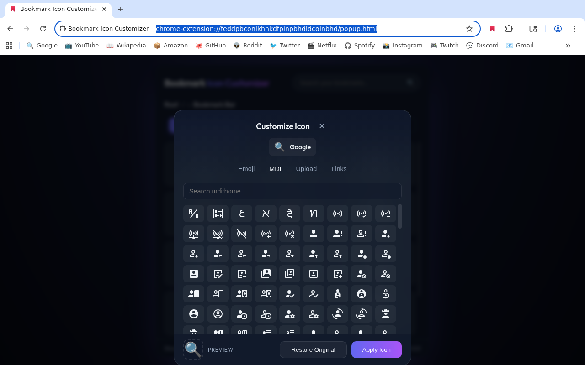
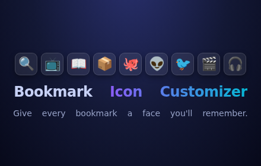
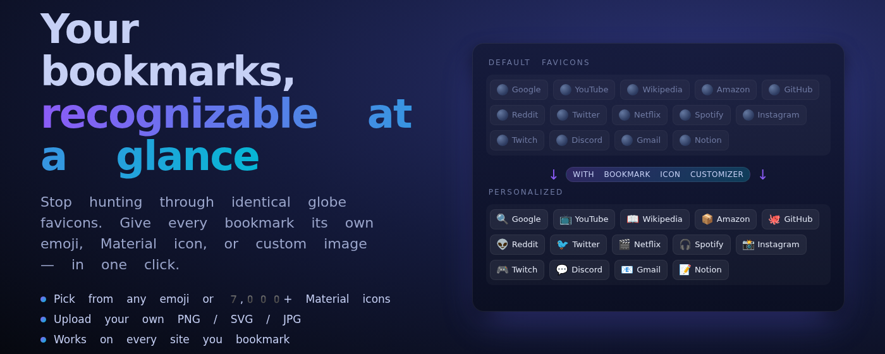

Replace any bookmark's favicon with an emoji, a Material Design Icon
(14,000+ glyphs), or your own image. Works with plain URLs,
javascript: bookmarklets, and webhooks.

Local-only storage, minimal permissions, zero tracking. Your bookmarks stay on your machine.
High-DPI 128×128 emoji rendering for icons that stay crisp on every display.
The full Material Design Icons library, searchable in-place.
Drop a PNG, JPG, or ICO and you're done — the extension handles sizing and caching.
Turn javascript: bookmarks into proper icon-carrying launchers. Original source is always recoverable.
Tick a box to make a URL fire silently when clicked — like a dedicated button in your bar. Perfect for Home Assistant and friends.
If you ever reinstall the extension, bookmarklets revert to their original javascript: form automatically.
Chrome's favicon cache is keyed by URL and has no public write API. The extension handles the plumbing so you don't have to.
data:text/html URL with the favicon inlined. Click the bookmark and it fires the request silently, without opening a tab.The picker is built to feel at home next to Chrome's own UI.



